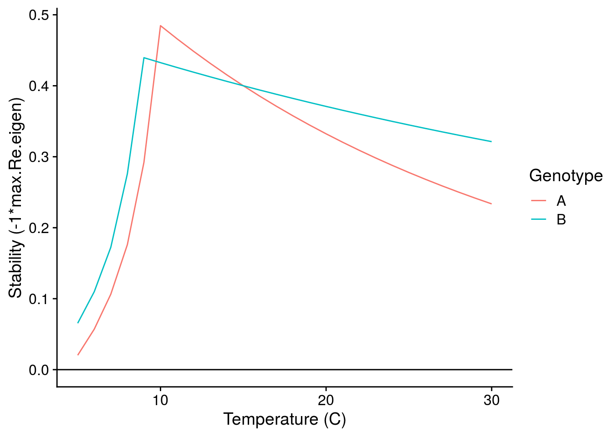

Last updated: 2020-02-07
Checks: 7 0
Knit directory: foodweb-theory/
This reproducible R Markdown analysis was created with workflowr (version 1.6.0). The Checks tab describes the reproducibility checks that were applied when the results were created. The Past versions tab lists the development history.
Great! Since the R Markdown file has been committed to the Git repository, you know the exact version of the code that produced these results.
Great job! The global environment was empty. Objects defined in the global environment can affect the analysis in your R Markdown file in unknown ways. For reproduciblity it’s best to always run the code in an empty environment.
The command set.seed(20200205) was run prior to running the code in the R Markdown file. Setting a seed ensures that any results that rely on randomness, e.g. subsampling or permutations, are reproducible.
Great job! Recording the operating system, R version, and package versions is critical for reproducibility.
Nice! There were no cached chunks for this analysis, so you can be confident that you successfully produced the results during this run.
Great job! Using relative paths to the files within your workflowr project makes it easier to run your code on other machines.
Great! You are using Git for version control. Tracking code development and connecting the code version to the results is critical for reproducibility. The version displayed above was the version of the Git repository at the time these results were generated.
Note that you need to be careful to ensure that all relevant files for the analysis have been committed to Git prior to generating the results (you can use wflow_publish or wflow_git_commit). workflowr only checks the R Markdown file, but you know if there are other scripts or data files that it depends on. Below is the status of the Git repository when the results were generated:
Ignored files:
Ignored: .Rhistory
Ignored: .Rproj.user/
Note that any generated files, e.g. HTML, png, CSS, etc., are not included in this status report because it is ok for generated content to have uncommitted changes.
These are the previous versions of the R Markdown and HTML files. If you’ve configured a remote Git repository (see ?wflow_git_remote), click on the hyperlinks in the table below to view them.
| File | Version | Author | Date | Message |
|---|---|---|---|---|
| Rmd | d04606f | mabarbour | 2020-02-07 | Exploring GxE effect of temperature on selection and |
I analyze a continuous time model of a consumer-resource interaction. The resource exhibits logistic growth and the consumer has a type 1 functional response:
\[\frac{dR}{dt}=R(r-\frac{rR}{K}-aC)\] \[\frac{dC}{dt}=C(eaR-m)\]
The following ecological rates govern the dynamics of this model:
r = intrinsic growth rate of resource at low densities
K = carrying capacity of resource
a = attack rate of consumer on the resource
e = conversion efficiency of resources into consumers
m = mortality rate of consumer
I consider these ecological rates as the phenotypes of the consumer and resource.
Following the framework of Gilbert et al. (2014), I assume that the temperature dependence of consumer and resource phenotypes can be modelled as Boltzmann-Arrhenius equations. I also use the biological plausible parameter values that they provide in Table 1 and Figure 3 of this paper. I explore the effects of temperature across a gradient from 5-30\(^\circ\)C.
To get a sense for how genotype-by-environment interactions (G\(\times\)E) might alter these dynamics, I created two different genotypes (A and B). These genotypes vary in their “initial” phenotype, which I setup at 15\(^\circ\)C. This choice of temperature was arbitrary and I chose it to follow Fig. 3 of Gilbert et al. (2014). I would argue this represents the effect of genotype (G) as it affects the “intercept” of the phenotype. To simulate a G\(\times\)E effect, I adjusted the activation energy of the temperature relationship (i.e., the slope). With these two genotypes, I can visualize G effects (comparing at 15\(^\circ\)C), E effects (mean phenotype change with temperature), and G\(\times\)E effects (different slopes of each genotype).
Scaling intrinsic growth rate r:
# Genotype A
r_seq <- r_scaling(r0 = r0(r_base = 2, E_B = 0.32, T = C_to_K(15)),
E_B = 0.32,
T = C_to_K(Temp_seq))
# Genotype B
r_seq2 <- r_scaling(r0 = r0(r_base = 1.5, E_B = 0.4, T = C_to_K(15)),
E_B = 0.4,
T = C_to_K(Temp_seq))Scaling carrying capacity K:
# Genotype A
K_seq <- K_scaling(K0 = K0(K_base = 100, E_B = 0.32, E_S = 0.9, T = C_to_K(15)),
E_B = 0.32,
E_S = 0.9,
T = C_to_K(Temp_seq))
# Genotype B
K_seq2 <- K_scaling(K0 = K0(K_base = 50, E_B = 0.4, E_S = 0.9, T = C_to_K(15)),
E_B = 0.4,
E_S = 0.9,
T = C_to_K(Temp_seq))Scaling mortality rate m:
# Genotype A
m_seq <- m_scaling(m0 = m0(m_base = 0.6, E_m = 0.45, T = C_to_K(15)),
E_m = 0.45,
T = C_to_K(Temp_seq))
# Genotype B
m_seq2 <- m_scaling(m0 = m0(m_base = 0.65, E_m = 0.5, T = C_to_K(15)),
E_m = 0.5,
T = C_to_K(Temp_seq))Scaling of attack rate a:
# parameters from Gilbert et al. 2014 and Osmond et al. 2017
# Genotype A
a_seq <- a_scaling(a0 = a0(a_base = 0.1, v0_C = 1, v0_R = 1,
E_vC = 0.46, E_vR = 0.46,
T_C = C_to_K(15), T_R = C_to_K(15)),
v0_C = 1, v0_R = 1, E_vC = 0.46, E_vR = 0.46,
T_C = C_to_K(Temp_seq), T_R = C_to_K(Temp_seq))
# Genotype B
a_seq2 <- a_scaling(a0 = a0(a_base = 0.15, v0_C = 1, v0_R = 1,
E_vC = 0.5, E_vR = 0.5,
T_C = C_to_K(15), T_R = C_to_K(15)),
v0_C = 1, v0_R = 1, E_vC = 0.5, E_vR = 0.5,
T_C = C_to_K(Temp_seq), T_R = C_to_K(Temp_seq)) According to Peters (1983), conversion efficiency e is independent of temperature, so I set e=0.15 as in Fig. 3 of Gilbert et al. (2014).
Below, I visualize the G\(\times\)E effects of temperature on each consumer and resource phenotype. This graph illustrates the well-known temperature dependence of each phenotype, but also indicates how we can model G\(\times\)E effects of temperature.
To answer this question, I have to understand how a small change in the phenotype alters the mean fitness (\(\bar{W}\)) of the consumer or resource population (i.e. directional selection). Importantly, both consumer and resource fitness are density-dependent:
\[\bar{W_R}=\frac{1}{R}\frac{dR}{dt}=r-\frac{r}{K}R-aC\] \[\bar{W_C}=\frac{1}{C}\frac{dR}{dt}=eaR-m\]
To make things easier, I assume the consumer and resource dynamics are at an equilibrium and use these values to to estimate selection on each phenotype.
Now I can plot both the G\(\times\)E effects of temperature, but also how these G\(\times\)E alters natural selection:
This plot suggests several interesting patterns:
Temperature increases r and K through a plastic response, but there is also positive directional selection on these traits. So in a sense, selection increase the magnitude of the environmental effect on r and K.
Although temperature increases mortality rate exponentially, selection acts to decrease mortality rate in a way that is independent of temperature. Therefore, selection decreases the magnitude of the environmental effect on m.
Despite conversion efficiency not changing with temperature, selection for greater conversion efficiency increases exponentially with temperature. This is indicative of temperature alter the ecological context, and thus selection on conversion efficiency.
Although it is not apparent, a close inspect of the above plot suggests that the absolute strength of selection is inversely related to the phenotype. To explore this explicitly, I plot this relationship below for the intialization temperature of 15\(^\circ\)C:
The above pattern is potentially interesting. Let’s analyze it using a linear model:
summary(lm(log(abs(selection)) ~ Genotype + log(phenotype),
data = filter(phenotype_selection_df, Temp_seq == 15)))
Call:
lm(formula = log(abs(selection)) ~ Genotype + log(phenotype),
data = filter(phenotype_selection_df, Temp_seq == 15))
Residuals:
Min 1Q Median 3Q Max
-0.16335 -0.09656 -0.04935 0.04373 0.46697
Coefficients:
Estimate Std. Error t value Pr(>|t|)
(Intercept) -0.32082 0.09177 -3.496 0.010 *
GenotypeB -0.05864 0.12972 -0.452 0.665
log(phenotype) -0.94781 0.02800 -33.849 5.09e-09 ***
---
Signif. codes: 0 '***' 0.001 '**' 0.01 '*' 0.05 '.' 0.1 ' ' 1
Residual standard error: 0.2051 on 7 degrees of freedom
Multiple R-squared: 0.9939, Adjusted R-squared: 0.9922
F-statistic: 572.9 on 2 and 7 DF, p-value: 1.745e-08The coefficient for log(phenotype) is ~1. Therefore, I believe this model implies that the strength of selection scales with the mean phenotype at a given temperature such that:
\[\beta\propto e^{-|z|}\]
I think this is interesting. It suggests that the contribution of selection to phenotypic change will be most important for phenotypes at smaller values.
How does this relationship change with temperature?
# center at initializing T = 15 C
summary(lm(log(abs(selection)) ~ Genotype + I(Temp_seq - 15)*log(phenotype),
data = phenotype_selection_df))
Call:
lm(formula = log(abs(selection)) ~ Genotype + I(Temp_seq - 15) *
log(phenotype), data = phenotype_selection_df)
Residuals:
Min 1Q Median 3Q Max
-7.9179 -0.1514 0.1024 0.3675 0.6689
Coefficients:
Estimate Std. Error t value Pr(>|t|)
(Intercept) -0.412780 0.080530 -5.126 5.86e-07 ***
GenotypeB -0.188333 0.110393 -1.706 0.0892 .
I(Temp_seq - 15) 0.077864 0.007468 10.427 < 2e-16 ***
log(phenotype) -0.950823 0.025385 -37.456 < 2e-16 ***
I(Temp_seq - 15):log(phenotype) -0.013412 0.003095 -4.334 2.11e-05 ***
---
Signif. codes: 0 '***' 0.001 '**' 0.01 '*' 0.05 '.' 0.1 ' ' 1
Residual standard error: 0.8898 on 255 degrees of freedom
Multiple R-squared: 0.8778, Adjusted R-squared: 0.8759
F-statistic: 457.9 on 4 and 255 DF, p-value: < 2.2e-16This model implies that that increasing temperature generally increases the strength of selection, but also alters the scaling relationship such that there is a greater contribution of smaller phenotypes, but weaker contribution of larger phenotypes (i.e. makes it more negative, see plot below).
The departure of the lines for Genotype B at temperatures below 8\(^\circ\)C coincides with a funky stability pattern below. I don’t quite understand this yet.
I can also look at how the G\(\times\)E effects of temperature alter the stability of the consumer-resource interactions:

While we still observe a typical stability pattern with temperature (explained in detail in Gilbert et al. 2014), we see that G\(\times\)E effects can switch which genotypes confer greater stability depending on temperature.
\[\Delta\bar{r}=r(T)+\beta_r\text{G}_r\]
Although the above illustrates the effects of G\(\times\)E, it’s still unclear to me whether selection favors Genotype A vs. B. Is this important to explore? Perhaps I could do this by using one of the genotypes as a reference (Genotype A) and then quantifying the relative fitness of Genotype B in the consumer-resource environment created by Genotype B (similar to an Adaptive Dynamics approach, where Genotype B would be the mutant invader).
Is it worth plotting more genotypes? This could be done by simulating many initial parameter values for the G effects from a normal distribution, as well as the G\(\times\)E effect by simulating different activation energies for the temperature dependence of each phenotype.
One thing that I do not address at all is the genetic covariance between these phenotypes (i.e. their G-matrix). This is certainly important for predicting evolutionary change in the next generation, but not critical for the selection analyses presented above. Interestingly, the selection analyses above could suggest what some of these genetic covariances might look like, since \(\Delta\text{G}=\text{G}(\gamma-\beta\beta^\text{T})\text{G}\). Note that \(\gamma\) refers to the matrix of nonlinear selection gradients, which I don’t address here (perhaps I could assume they are negligible, since directional selection is strong? e.g. if directional selection is weak, then we might expect disruptive/stabilizing selection). Also T in this equation refers to the transpose of the vector of directional selection gradients (\(\beta\)) and not temperature.
Gilbert, Benjamin, Tyler D Tunney, Kevin S McCann, John P DeLong, David A Vasseur, Van Savage, Jonathan B Shurin, et al. 2014. “A Bioenergetic Framework for the Temperature Dependence of Trophic Interactions.” Ecol. Lett. 17 (8): 902–14.
Peters, Robert Henry. 1983. The Ecological Implications of Body Size. Cambridge University Press.
sessionInfo()R version 3.6.2 (2019-12-12)
Platform: x86_64-pc-linux-gnu (64-bit)
Running under: Ubuntu 16.04.6 LTS
Matrix products: default
BLAS: /usr/lib/libblas/libblas.so.3.6.0
LAPACK: /usr/lib/lapack/liblapack.so.3.6.0
locale:
[1] LC_CTYPE=en_US.UTF-8 LC_NUMERIC=C
[3] LC_TIME=en_US.UTF-8 LC_COLLATE=en_US.UTF-8
[5] LC_MONETARY=en_US.UTF-8 LC_MESSAGES=en_US.UTF-8
[7] LC_PAPER=en_US.UTF-8 LC_NAME=C
[9] LC_ADDRESS=C LC_TELEPHONE=C
[11] LC_MEASUREMENT=en_US.UTF-8 LC_IDENTIFICATION=C
attached base packages:
[1] stats graphics grDevices utils datasets methods base
other attached packages:
[1] cowplot_1.0.0 forcats_0.4.0 stringr_1.4.0 dplyr_0.8.3
[5] purrr_0.3.2 readr_1.3.1 tidyr_0.8.3 tibble_2.1.3
[9] ggplot2_3.2.0 tidyverse_1.2.1 rootSolve_1.7 deSolve_1.24
loaded via a namespace (and not attached):
[1] tidyselect_0.2.5 xfun_0.9 haven_2.1.0 lattice_0.20-38
[5] colorspace_1.4-1 generics_0.0.2 viridisLite_0.3.0 htmltools_0.3.6
[9] yaml_2.2.0 rlang_0.4.0 later_0.8.0 pillar_1.4.2
[13] glue_1.3.1 withr_2.1.2 modelr_0.1.4 readxl_1.3.1
[17] munsell_0.5.0 gtable_0.3.0 workflowr_1.6.0 cellranger_1.1.0
[21] rvest_0.3.4 evaluate_0.14 labeling_0.3 knitr_1.26
[25] httpuv_1.5.1 broom_0.5.2 Rcpp_1.0.2 promises_1.0.1
[29] backports_1.1.4 scales_1.0.0 jsonlite_1.6 fs_1.3.1
[33] hms_0.4.2 digest_0.6.20 stringi_1.4.3 grid_3.6.2
[37] rprojroot_1.3-2 cli_1.1.0 tools_3.6.2 magrittr_1.5
[41] lazyeval_0.2.2 crayon_1.3.4 whisker_0.3-2 pkgconfig_2.0.2
[45] xml2_1.2.0 lubridate_1.7.4 assertthat_0.2.1 rmarkdown_2.0
[49] httr_1.4.1 rstudioapi_0.10 R6_2.4.0 nlme_3.1-140
[53] git2r_0.26.1 compiler_3.6.2